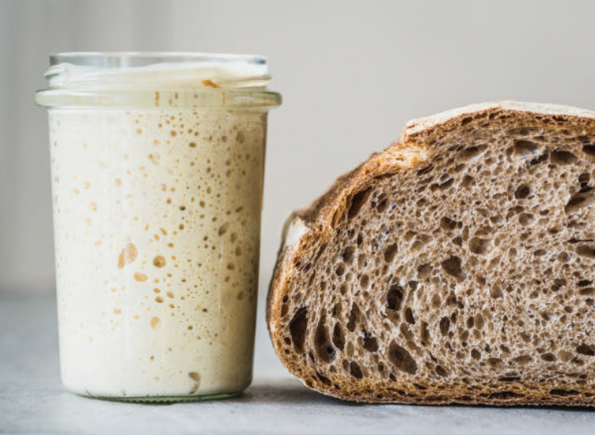

Sourdough starter & Sourdough bread
Sourdough bread is a type of bread made using a natural fermentation process that relies on a sourdough starter instead of commercial yeast. A sourdough starter is a live culture of flour and water that, over time, captures wild yeast and beneficial bacteria from the environment. This natural fermentation gives sourdough its distinct tangy flavor, chewy texture, and long shelf life. The process of making sourdough bread is slower than traditional breadmaking, but the result is a highly digestible and nutrient-rich loaf cherished for its artisanal quality and complex taste.
